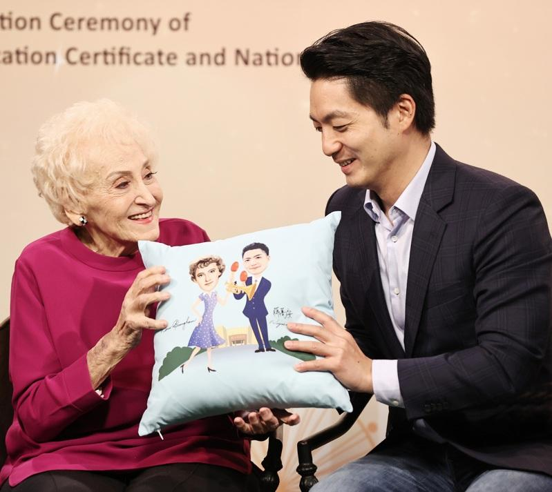
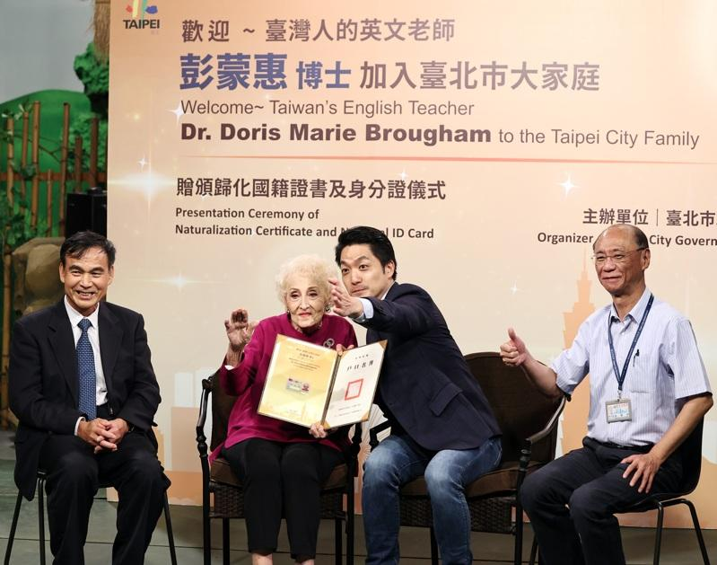

98岁的「台湾英语教母」彭蒙惠，惊传昨天(6)晚上6点47分在淡水马偕过世，据了解，彭蒙惠的遗体，已经在昨天晚间10点送到台北怀爱馆（台北二殡）。
「空中英语教室」创办人彭蒙惠惊传过世，让相当多人不舍，去年彭得到国籍时，台北市长蒋万安还亲自颁发身分证给彭蒙惠，感谢彭蒙惠对台湾的贡献。
彭蒙惠当时也表示，她在台湾已超过70年，励志推广英语教育，她也传授人生观念，每一天都要向前看，努力生活，也要大家团结在一起，才能为这片土地做更多事。
彭蒙惠当时受访也提到，她已经在台湾工作超过70年，「工作在哪里，心在哪里」，拿到身分证成为台湾人，也可以跟身边所有的伙伴永远在一起。
蒋万安当时自曝，自己都是看空中英语教室长大，在高中时候听彭蒙惠的声音，更打下了后来英文基础。蒋表示，彭蒙惠将一生奉献给了台湾这块土地，更见证台湾历史的变化。
据了解，彭蒙惠是从1951年来到台湾传教，一开始先到花莲服事，因常与泰雅族交流，更有原住民名字「利百佳」，于1960来到台北市，后来有感于台湾缺乏英语教育决心推广，创办空中英语教室，后来许多英语节目相继呼出包含「大家说英语」、「空中英语教室」、「彭蒙惠英语」提供不同层级的英语教学与杂志，对台贡献极大，彭蒙惠更有「英语教母」之称。
